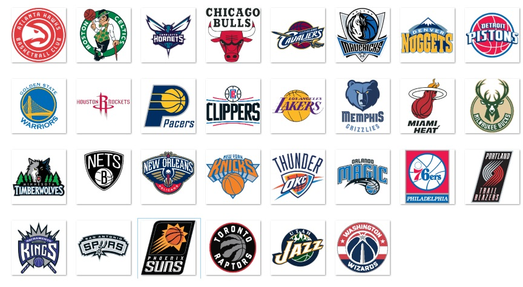

Times
Conferência Leste
Divisão do Atlântico (NBA)
• Boston Celtics (desde 1946) • Brooklyn Nets • New Jersey Americans (1967-68, ABA) • New York Nets (1968-76, ABA; 1977-78, NBA) • New Jersey Nets (1978-2012) • Brooklyn Nets (desde 2012) • New York Knicks (desde 1946) • Philadelphia 76ers • Syracuse Nationals (1946-49, NBL; 1949-1963) • Philadelphia 76ers (desde 1963) • Toronto Raptors (desde 1995)Divisão Central (NBA)
• Chicago Bulls (desde 1966) • Cleveland Cavaliers (desde 1970) • Detroit Pistons • Fort Wayne Pistons (1941-48, NBL; 1949-1957, NBA) • Detroit Pistons (desde 1957) • Indiana Pacers (1967-1976 na ABA, desde 1976 na NBA) • Milwaukee Bucks (desde 1968)Divisão Sudeste (NBA)
• Atlanta Hawks • Buffalo Bisons (1946, NBL) • Tri-Cities Blackhawks (1946-49, NBL; 1949-1951, NBA) • Milwaukee Hawks (1951-55) • St. Louis Hawks (1955-68) • Atlanta Hawks (desde 1968) • Charlotte Hornets • Charlotte Hornets (1988-2002, relocado para se tornar o atual New Orleans Pelicans) • Charlotte Bobcats (2004-2014) • Charlotte Hornets (desde 2014) • Miami Heat (desde 1988) • Orlando Magic (desde 1989) • Washington Wizards • Chicago Zephyrs (1961-1963) • Baltimore Bullets (1963-1973) • Capital Bullets\Washington Bullets\Washington Wizards (desde 1973)Conferência Oeste
Divisão Noroeste (NBA)
• Denver Nuggets (1967-1976 na ABA, desde 1976 na NBA)• Minnesota Timberwolves (desde 1989)
• Oklahoma City Thunder
• Seattle SuperSonics (1967-2008)
• Oklahoma City Thunder (desde 2008)
• Portland Trail Blazers (desde 1970)
• Utah Jazz
• New Orleans Jazz (1974-79)
• Utah Jazz (desde 1979)
Divisão do Pacífico (NBA)
• Golden State Warriors• Philadelphia Warriors (1946-1962)
• San Francisco Warriors (1962-1971)
• Golden State Warriors (desde 1971)
• Los Angeles Clippers
• Buffalo Braves (1970-1978)
• San Diego Clippers (1978-1984)
• Los Angeles Clippers (desde 1984)
• Los Angeles Lakers
• Minneapolis Lakers (1948-1960)
• Los Angeles Lakers (desde 1960)
• Phoenix Suns (desde 1968)
• Sacramento Kings
• Rochester Royals (1948-1957)
• Cincinnati Royals (1957-1972)
• Kansas City – Omaha Kings (1972-1975)
• Kansas City Kings (1975-1985)
• Sacramento Kings (desde 1985)
Divisão Sudoeste (NBA)
• Dallas Mavericks (desde 1980)• Houston Rockets
• San Diego Rockets (1967-1971)
• Houston Rockets (desde 1971)
• Memphis Grizzlies
• Vancouver Grizzlies (1995-2000)
• Memphis Grizzlies (desde 2000)
• New Orleans Pelicans
• New Orleans Hornets (2002-2005; 2007-2013)
• New Orleans\Oklahoma City Hornets (2005-2007)
• New Orleans Pelicans (desde 2013)
• San Antonio Spurs
• Dallas Chaparrals (1967-73, ABA)
• San Antonio Spurs (1973-76, ABA; desde 1976, NBA)